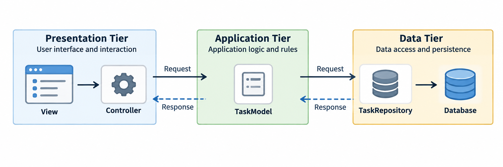

Roadmap
The persistent Task List already works. Now we organize the same app into clearer parts.
Start from the MVC and Repository classes we already know.
Find the responsibilities currently collected in the Controller.
Group the application into presentation, application, and data tiers.
Move one dependency so each tier has a clearer job.
Trace one task from the button click to the database and back.
What We Already Know
| Part | Responsibility |
|---|---|
| Displays tasks and provides controls. |
| Responds to button events. |
| Hold the task data used by the application. |
| Defines the operations for saved tasks. |
| Implements those operations with JDBC. |
These classes already separate many responsibilities. Three-tier helps us see the larger structure.
Current Persistent Task App
The Controller currently coordinates both the screen and persistence.
TaskView ----> TaskController ----> TaskModel
|
+-------------> TaskRepository
|
v
JdbcTaskRepository ----> DatabaseThe View and Controller form the familiar MVC presentation.
The Repository still hides JDBC and SQL.
The Controller knows both the Model and the Repository.
The Controller Has Two Jobs
public void addClicked() {
String title = view.getEnteredTitle();
if (title.isBlank()) {
view.setStatus("Title required");
return;
}
repository.add(title);
model.replaceTasks(repository.findAll());
view.refresh();
}Presentation work: Read the field, handle the click, and refresh the screen.
Application work: Check the title, save the task, and reload application state.
Presentation, Application, and Data
| Tier | Main question | Task List classes |
|---|---|---|
Presentation |
How does the user interact with the application? |
|
Application |
What should the application do? |
|
Data |
How are tasks saved and loaded? |
|
The tiers describe responsibilities. They can all run inside one Java program.
Familiar Classes in a Larger Structure
Presentation:
TaskView,TaskController, JavaFX controls and eventsApplication:
TaskModel,Task, task operations and rulesData:
TaskRepository,JdbcTaskRepository, JDBC, SQL, and H2
Three-tier does not replace MVC.
Three-tier does not replace the Repository.
It shows where both ideas fit in the complete application.

Add a Task
The View provides the entered title.
The Controller calls
model.addTask(title).The Model checks the task rule.
The Model asks the Repository to save the task.
The Repository uses JDBC to update the database.
The Model reloads its task list.
The Controller tells the View to refresh.
Presentation: TaskController
The presentation tier handles user interaction and delegates application work to the Model.
public void addClicked() {
try {
model.addTask(view.getEnteredTitle());
view.refresh();
view.clearEnteredTitle();
view.setStatus("Task saved");
} catch (IllegalArgumentException | RepositoryException exception) {
view.setStatus(exception.getMessage());
}
}The Controller handles the button event and display feedback.
It asks the Model to perform the task operation.
No Repository field, JDBC type, or SQL appears here.
The presentation tier handles user interaction and delegates application work to the Model.
Data: TaskRepository
The data tier gives the application persistence operations without exposing how they are implemented.
public interface TaskRepository {
List<Task> findAll();
void add(String title);
void setDone(long id, boolean done);
void delete(long id);
}The Model works with task operations such as
addandfindAll.JdbcTaskRepositorytranslates those operations into JDBC and SQL.No
Connection,PreparedStatement, orResultSetcrosses the boundary.
Connect the Objects in One Place
DatabaseConfig config =
DatabaseConfig.load("/database.properties");
TaskRepository repository = new JdbcTaskRepository(config);
TaskModel model = new TaskModel(repository);
TaskView view = new TaskView(model);
TaskController controller = new TaskController(model, view);
controller.connectHandlers();External configuration supplies the database connection settings.
The Model receives the Repository it needs.
The Controller receives only the Model and View it needs.
The construction code makes the dependency direction visible.
Classify Each Responsibility
Choose presentation, application, or data.
Display
"Task saved".Handle the Add button event.
Reject a blank task title.
Reload the current tasks after a change.
Execute an
INSERTstatement.Convert a database row into a
Task.
Possible Classification
Presentation: display
"Task saved"and handle the Add button event.Application: reject a blank title and reload the current tasks.
Data: execute the
INSERTand map a database row to aTask.
When a class starts doing work from another tier, move that responsibility to the class that owns it.
Key Takeaways
Presentation tier: handles user interaction and display.
Application tier: handles application rules, state, and operations.
Data tier: handles persistence, JDBC, SQL, and database mapping.
MVC separates the View, Controller, and Model.
Repository separates database access from application logic.
Three-tier organizes these responsibilities into a larger application structure.